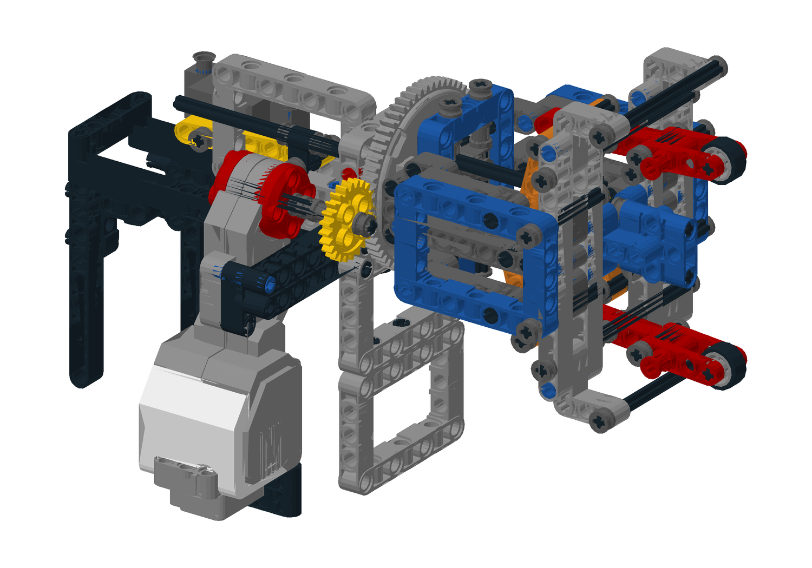
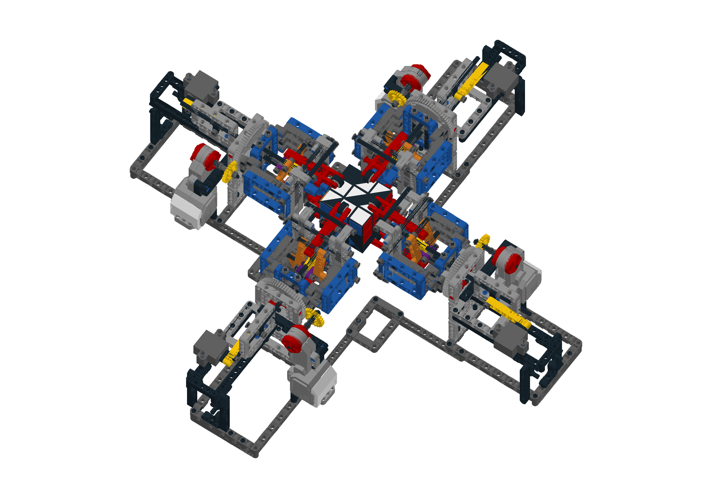
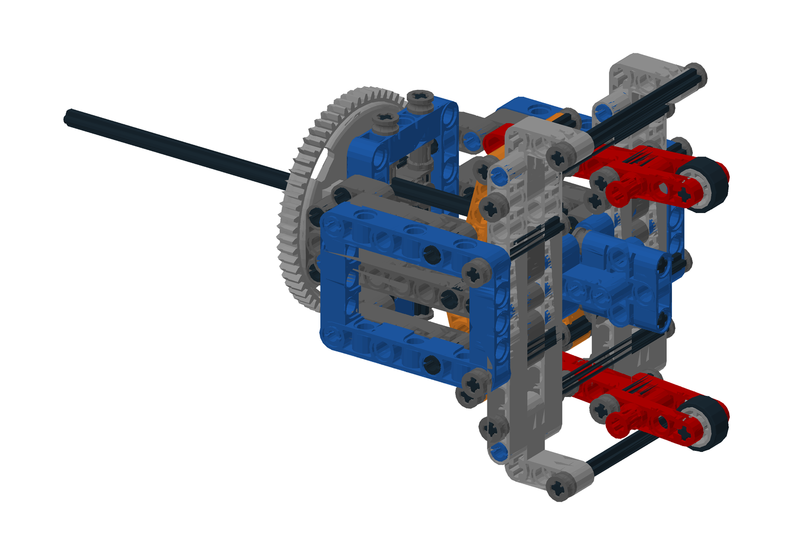
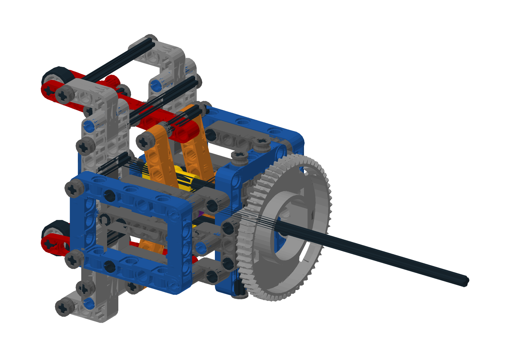
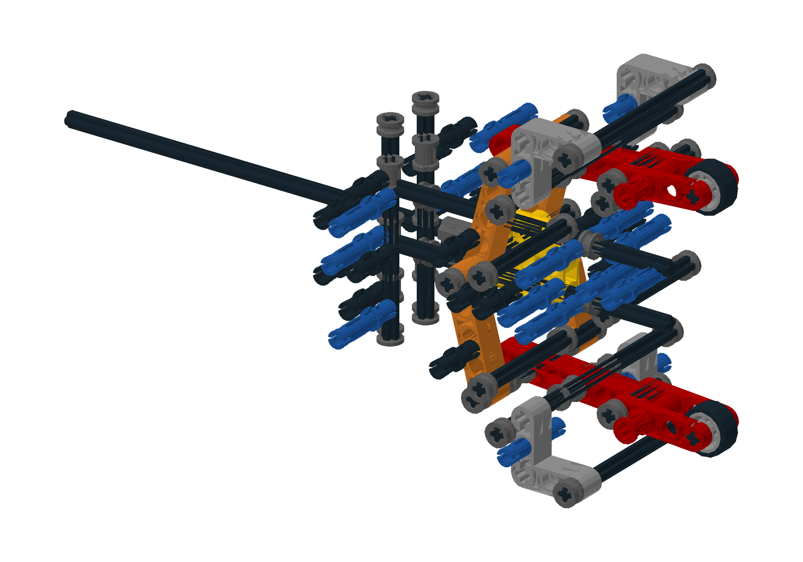

正在加载真实零件…
鼠标左键旋转、滚轮缩放、右键平移。图中隐藏骨架只是观察方式；此页不是逐步装配说明。全圆孔薄梁数量为零。
机械头小样：43步搭建图
当前验证范围
81个开合位置；288个本臂回转／邻臂开合组合（每5°采样）；固定骨架约束秩检查；魔方硬件避让和松开轮胎回转检查。离散检查不能替代连续碰撞证明，也不能证明塑料刚度、装配公差或导轨顺滑。
设计说明与承重计算 · BOM变化 · 完整单臂 LDraw · 整机 LDraw

完整单臂：后部接口与机械头
四臂整体：空间关系
机械头轴测
机械头反面
隐藏骨架：导轨、滑块、连杆与根轴